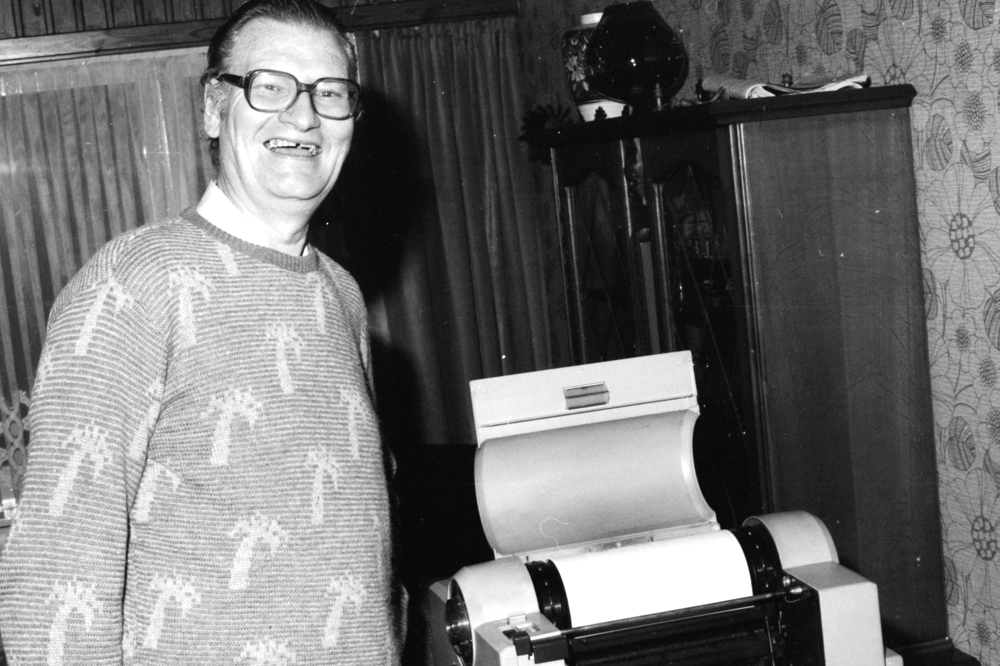

De Voorbode
De BSP gaf voor het arrondissement een weekblad uit “Polder en Hei”. Sooi schreef daar voor artikels over het gemeentelijk beleid. Samen met Jules Craey werd de zaterdagmiddag gebrainstormd over wat er in het blad moest verschijnen. Het arrondissementeel blad hield in 1960 op te bestaan, maar in Essen vond men dat dit informatieblad een noodzaak was om nationale en plaatselijke politiek onder de mensen te brengen. Het kreeg als titel De Voorbode en was tevens een blad waar de aangesloten kringen hun activiteiten konden propageren. Het werd een gestencild blad dat eerst op de federatie gedrukt werd, maar dit werd te duur en Willy Merks stelde voor zelf een stencilmachine aan te kopen. Sindsdien is De Voorbode een begrip in Essen geworden en wordt het maandelijks met de titel JijMaaktEssen uitgegeven.